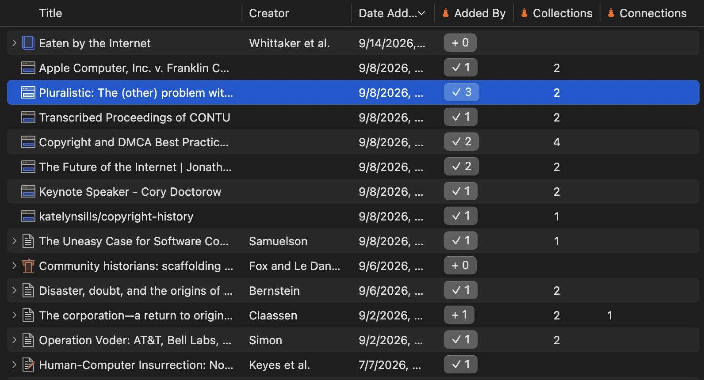
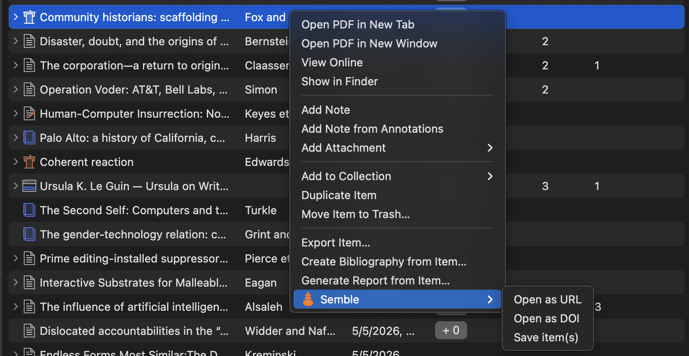
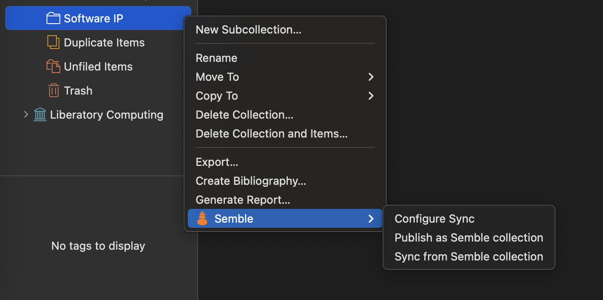

Installation
- Check to make sure Zotero is at a minimum version 10.
-
Download the latest Zemble Plugin
here.
Or check out
previous releases
and download the
zemble.xpifile. -
In Zotero, click
Tools > Plugins > "..." menu > "Open Plugin from File"and open thezemble.xpifile that you just downloaded.
Signing In
By default Zemble requires no account. You will be able to see columns of how other people are interacting with papers, sync collection from Semble to Zotero, and preview additional info in item panel.
If you want to share papers or Zotero collections on Semble, you will need to have an account on Semble and get an API key.
Features
It's important to be aware of that Semble operates on links, so it only works with references that have a URL or DOI.
-
Add columns to see how others have interacted with your references. Each column links to more detailed views in Semble.

-
Added By- how many people have saved this item. When logged in, you will see a button indicating whether you've saved this reference to Semble. -
Collections- how many collections have others saved this reference too. Connections- how many connections have others made with this reference.Notes- how many notes have others made about this reference.
-
-
Right clicking on items will let you open or save those items in Semble, this works when multiple items are selected.

-
Zotero collections can by synced to/from Semble, this makes it easy to turn your references into a link (Semble collection) you can easily share with others. They can then easily pull that Semble collection into Zotero to integrate it with their own references.

-
Configure Sync- Set the URL to the Semble collection you want to sync the Zotero collection with. -
Publish as Semble Collection- Creates a new collection on Semble and save all of the items in that Zotero Collection to Semble. If done multiple times it will update the same collection with new cards. -
Sync from Semble Collection- Pull in changes from the Semble collection. This currently does not delete any items that you've added to your local Zotero collection.
-
Resources
- Semble is part of the AT Science community that is building alternative publishing, knowledge sharing, and institutions on the open web.
- There are many other great Zotero plugins including Scite, PeerPub, and References.